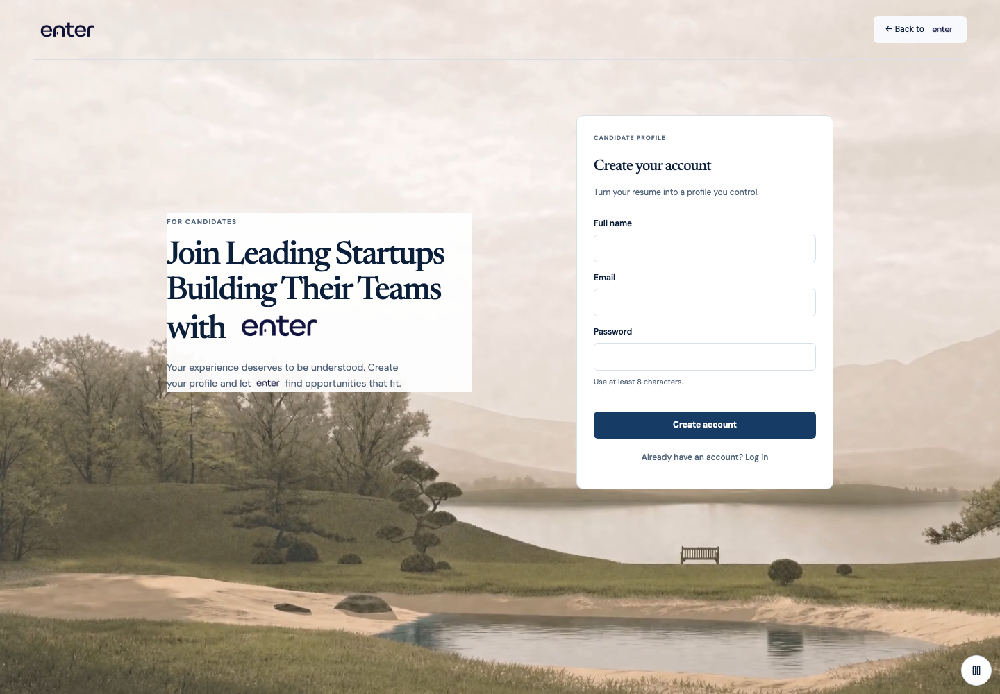
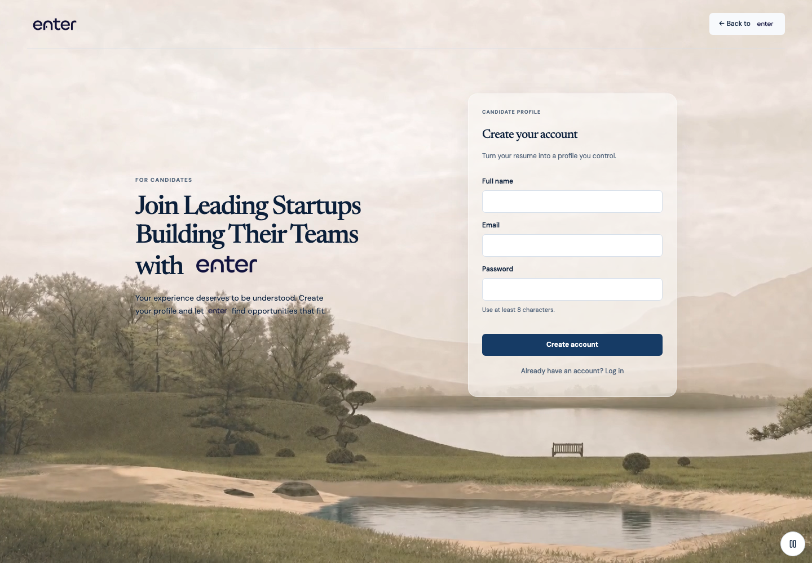
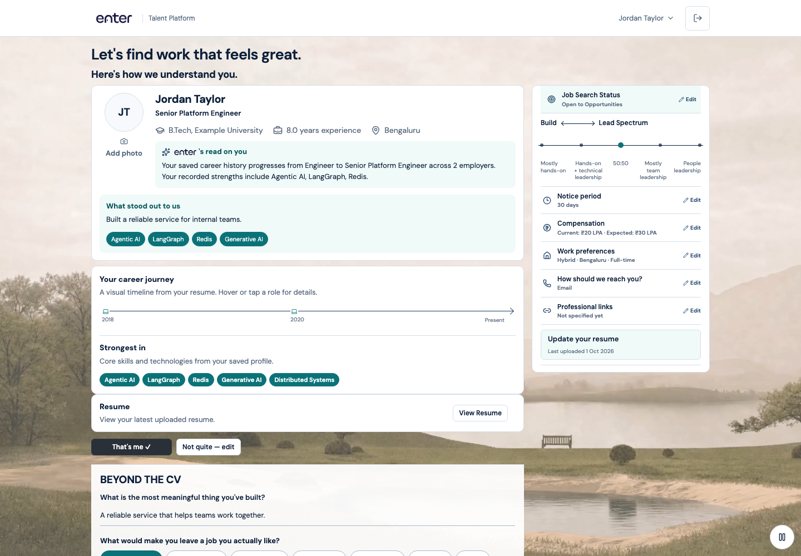
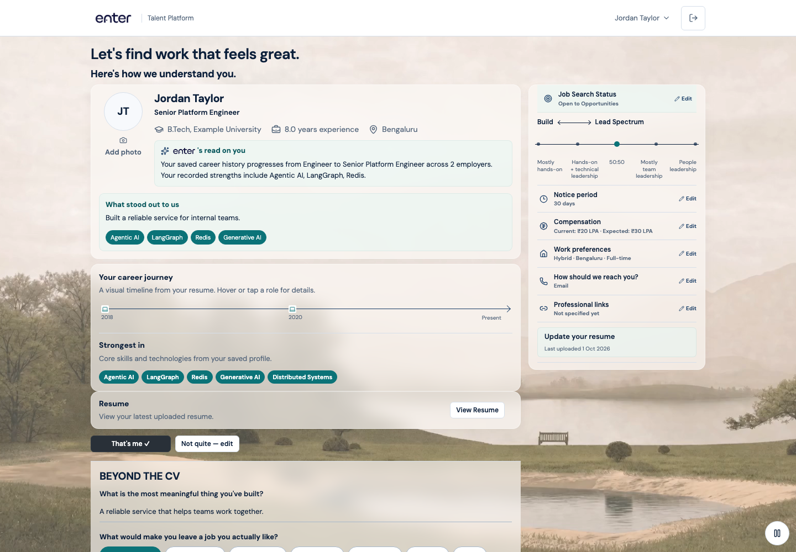

ENTER — glass surface comparison
Same layouts and landscape video. Left: before. Right: translucent surfaces.
Candidate signup
Before — opaque cards and headline panel
After — no headline panel; 58% frosted card
Candidate profile
Before — white surfaces
After — 68% glass; pale-teal inner panels